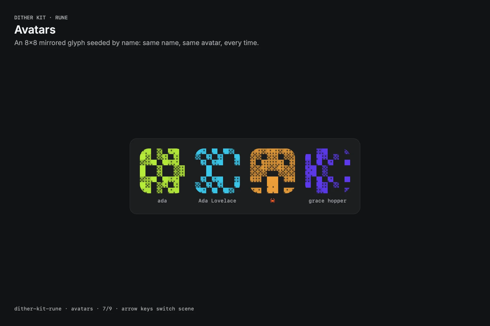

dither-kit-rune
Rust × Rune
Dither Kit for Rune
A native Rust port of Dither Kit. The same ordered-dither texture across charts, avatars, buttons and gradients — one deterministic engine, no canvas, no browser.
$ cargo run -p gallery

Components
Every component is a Rune element. Each screenshot is a deterministic headless render at 2×.





Engine
One deterministic core
The Bayer matrix, alpha tiers, scales and PRNG live in dither-core, with no UI dependency.
Opacity, not shades
Every pixel is the series colour at a varying alpha, so the same surface reads correctly on light and dark.
Byte-parity fixtures
Painter output is compared against buffers generated by the pinned upstream TypeScript.
green
blue
purple
pink
orange
red
grey